The evolution equations for the elliptical Gaussian basis functions
depend upon  and
and  , but unlike the most other basis
functions used for vortex methods, there is no known expression for
these induced fields in terms of simple functions. However, the
induced velocity and velocity deviations can be written as a regular
perturbation in the small parameter
, but unlike the most other basis
functions used for vortex methods, there is no known expression for
these induced fields in terms of simple functions. However, the
induced velocity and velocity deviations can be written as a regular
perturbation in the small parameter
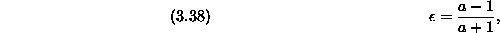
expanding these field as a deviates from unity. A fourth order approximation produces excellent agreement with the exact solution in the near field, and it automatically converges in the far field where the aspect ratio is not important. Since the dynamics of ECCSVM in the appropriate convergent limit also forces
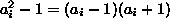
to converge to zero, the asymptotic approximation is guaranteed to converge to the exact velocity field in the same limit.Without loss of generality, the elliptical Gaussian element basis function is centered at the origin, and its major and minor axes are aligned with the coordinate axes ( ):
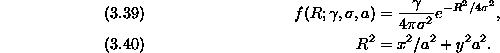
The variable R is a continuous index of level sets of the elliptical Gaussian element. Though one could express the velocity fields as a full two dimensional Biot-Savart integral, one can also use the fact that the streamfunction (and therefore all derivatives) of an elliptical patch of vorticity with unit density and semimajor and minor axes of and can be determined using elliptical coordinates [12]:
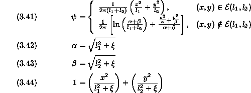
where
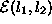
is the support of the ellipse and
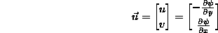
.
The streamfunction induced by an elliptical blob can be expressed as an infinite sum of uniform elliptical patches. For each value of R in (3.39), the constituent patch would have density
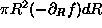
and axes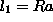
and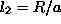
. Adding all these patches together to form an elliptical Gaussian blob, one can calculate the value of the streamfunction at a point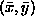
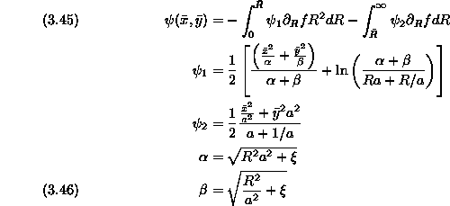
Rather than using the implicit relation in equation (3.44), we can use the quadratic solution
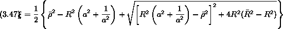
where
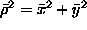
and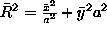
. Important limits to be used later are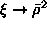
as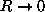
and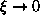
as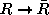
.While
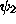
is constant with respect to R making the second term on the right side of (3.45) elementary to integrate,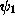
is not readily expressed in terms of the variable R making the first term problematic. However, one can approximate in powers of the small parameter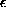
. Expanding in rather than R has the advantage that can be made to be a truly small parameter while the parameter R is not guaranteed to be small relative to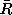
is a parameter representing one possible combination of and . One of many possible complements is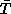
where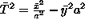
. Combined with the fact that the streamfunction must retain a twofold symmetry about the major and minor axes, the streamfunction can be expressed as a function of and . One could also use coordinates radially symmetric coordinates such as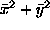
and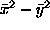
, but it was found that these parameters yields less accurate streamfunction approximations because they do not explicitly contain information about the elliptical geometry. For instance, a term involving must be corrected at the next order of to express information about the elliptical radius.From (3.38), we can use
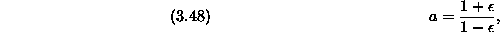
to find that
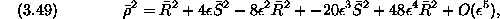
where
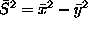
, so that
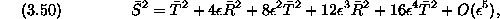
and therefore
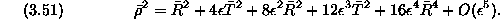
Substituting the expression above into the streamfunctions (3.46) and (3.47) and expanding in powers of , one obtains
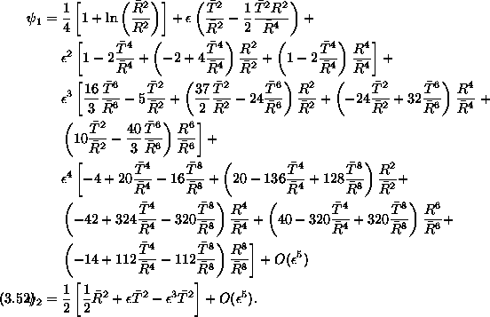
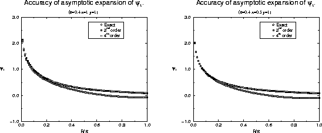
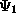
. A second-order (squares) and fourth-order (diamonds) expansion are shown together with the exact function (circles). The aspect ratio of 5.44... ( ) is chosen intentionally to be large to demonstrate that the fourth order approximation is quite robust. The streamfunction is calculated with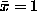
and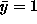
on the left and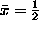
and on the right.Since does not vary with R, the main concern is that remain accurate over
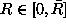
. In addition to being an excellent approximation to the exact streamfunction (see Fig. (3.2)), the asymptotic approximation (3.52) has two important advantages. First, the fourth order approximation in (3.52) can be integrated exactly in equation (3.45) because derivatives of (3.52) involve only even powers of R. Therefore, calculating velocities and velocity deviations is simply a matter of differentiating the exact expression with respect to and . No term from the ``Leibnitz rule'' is retained when differentiating because is continuous and continuously differentiable across the boundary at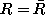
. Second, incompressibility is exactly preserved both locally and globally using the approximate streamfunction as would not be case if one were to numerically approximate the Biot-Savart integrals.Observing that the fourth order approximation for the streamfunction involves only zeroth, second, fourth and sixth moments of
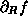
, we anticipate that all integrals approximating velocities,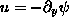
,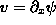
, as well as velocity deviations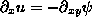
, etc. will involve integrals of the form
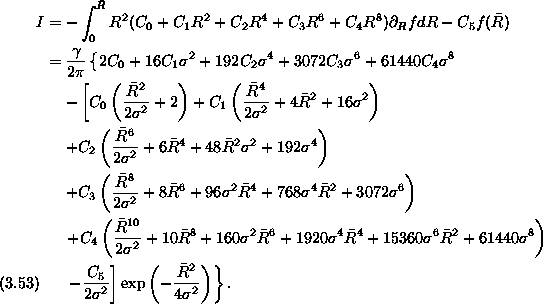
The coefficients, , (i=0,1,2,3,4), have been determined after many manipulations and reductions. One can exploit symmetries in and reduce the amount of work by a factor of two by storing intermediate variables and
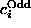
, listed in Table (3.1). For ,
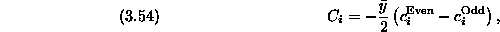
and for ,
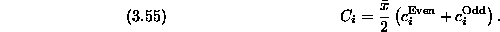
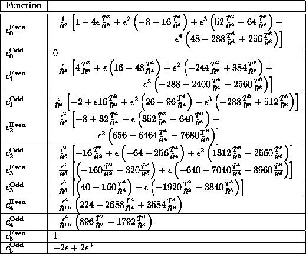
Similarly, one can use the fourth order expand of to evaluate second spatial derivatives that are necessary to calculate flow deviations. The necessary additional intermediate coefficients are tabulated in Table (3.2). For
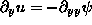
,
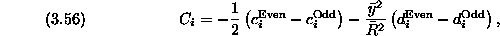
and for ,
For , some intermediate variables can be recycled once again.
Table 3.2: Table of coefficients for velocity deviation calculations
Figure 3.3: Sample velocity (left) and velocity derivative (right)
calculations for an
elliptical Gaussian element. In this case, corresponding to
an aspect ratio of 2.25. One can see that corresponding symbols cover one
another indicating a very accurate match between the asymptotic
approximation and the ``exact'' quantity that is calculated numerically to
machine precision.
While the second order expansion was not sufficiently close to the streamfunction (see Fig. (3.2)) for the calculation of either first or second derivatives, Fig. (3.3) demonstrates that the fourth order approximation yields very accurate results.